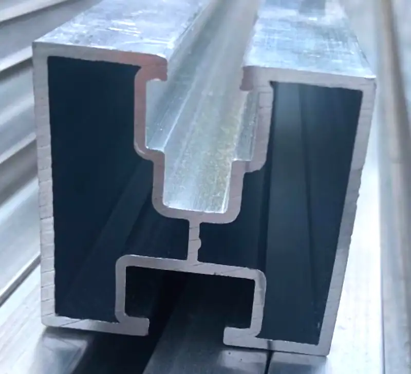
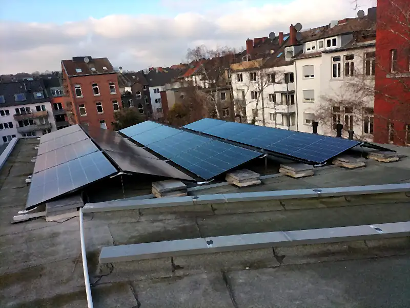

Montageschiene · Aluminium · 40 × 40 × 6000 mm
Photovoltaik, die hält.
Planung und Installation von Photovoltaikanlagen im Dreiländereck. Solar Technik BwM aus Lontzen, für Kunden rund um Aachen.

Blechdach · Trapezblechschuh aus Edelstahl
Blechdach: der Trapezblechschuh.
Verstellbar, mit eingeklebtem EPDM-Gummi, passend für die meisten Trapezbleche.

Flachdach · aufgeständert
Flachdach: in Reihen aufgeständert.
Die Gestelle stehen auf dem Dach und sind mit Betonsteinen beschwert, wie hier auf einem Dach in der Stadt.

Satteldach · Dachhaken aus Edelstahl
Ziegeldach: der Dachhaken.
Grundplatte 140 × 56 mm, dreifach verstellbar, für Standardpfannen. Auf den Haken läuft die Schiene.

Jede Dachform
Planen, montieren, anschließen, warten.
Alles rund um Photovoltaik aus einer Hand, mit Produkten namhafter Hersteller. Auf Flachdach, Satteldach, Pultdach oder Freifläche.
Raum Aachen · Ostbelgien · Südlimburg
Ein Betrieb, drei Länder.
Wir haben uns auf die Planung und Installation hochwertiger Photovoltaikanlagen im Raum Aachen spezialisiert. Unser Kundenkreis liegt im Dreiländereck Deutschland, Belgien und Niederlande.
Um Ihnen ein hohes Maß an Investitionssicherheit für viele Jahre zu bieten, arbeiten wir ausschließlich mit namhaften Herstellern und deren Qualitätsprodukten.
Über Solar Technik BwMSchematische Darstellung
Der Aufbau
Was eine Anlage trägt.
Von der Pfanne bis zur Klemme: fünf Schichten, und jede muss sitzen. Die Maße stammen aus unserem Material.
Nicht maßstäblich
- End- und MittelklemmeAluminium schwarz eloxiert, Klemmlänge 70 mm, Modulabstand 2 cm
- SolarmodulJA Solar JAM72S10, 405 W, 2015 × 996 × 40 mm, 22,7 kg
- MontageschieneAluminium, 40 × 40 × 6000 mm, Befestigung M8 oder M10
- DachhakenEdelstahl 1.4016, Grundplatte 140 × 56 mm, dreifach verstellbar
- Ihr DachPfanne, Blech, Bitumen oder Wiese: die Befestigung richtet sich danach
Leistungen
Wir machen alles rund um Photovoltaik.
- Planung & BeratungDach, Verbrauch und Wünsche aufnehmen, die passende Anlage auslegen.Mehr
- MontageGestell, Schienen und Module auf Flachdach, Satteldach, Pultdach oder Wiese.Mehr
- AnschließenWechselrichter, Speicher und Energiezähler verbinden und in Betrieb nehmen.Mehr
- WartungBefestigung, Kabel und Ertrag prüfen, damit die Anlage Jahre läuft.Mehr
Dachformen
Flachdach, Satteldach, Pultdach oder Wiese.
Jegliche Wünsche der Anbringung sind möglich. Was sich ändert, ist das, was die Module hält.

Flachdach
Die Module stehen in Reihen auf Gestellen, beschwert mit Betonsteinen. Neigung und Reihenabstand planen wir so, dass sich die Reihen nicht verschatten.
Befestigung für Ihr Dach findenReferenzen
Von unseren Dächern.


Selbst ausprobieren
Acht Fragen, acht kleine Werkzeuge.
Jede Frage führt direkt zum passenden Rechner oder Wegweiser auf der Unterseite. Die Ergebnisse sind Richtwerte, keine Planung.
- Was braucht BwM von mir für ein Angebot?Anfrage-Steckbrief
- Wie wird auf meinem Dach befestigt?Befestigung nach Eindeckung
- Wie viele Schienen und Klemmen braucht mein Dach?Stückliste
- Warum liefern Module im Hochsommer weniger?Hitze-Rechner
- Welcher Wechselrichter passt zu meiner Modulzahl?Wechselrichter-Finder
- Reicht ein Speicher durch die Nacht?Nacht-Rechner
- Wann sollte die Waschmaschine laufen?Tagesplan der Geräte
- Meine Anlage liefert weniger – was tun?Symptom-Wegweiser
Anfrage
Erzählen Sie uns von Ihrem Dach.
Mit Stromverbrauch, Heizung und Warmwasser können wir die Anlage schon grob auslegen, bevor wir vorbeikommen.
- +49 1575 5232254
- info@solar-bwm.com
- Malte Behrenswerth, Schmalgraf 48, B-4710 Lontzen